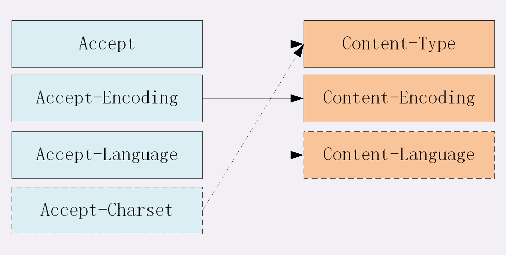
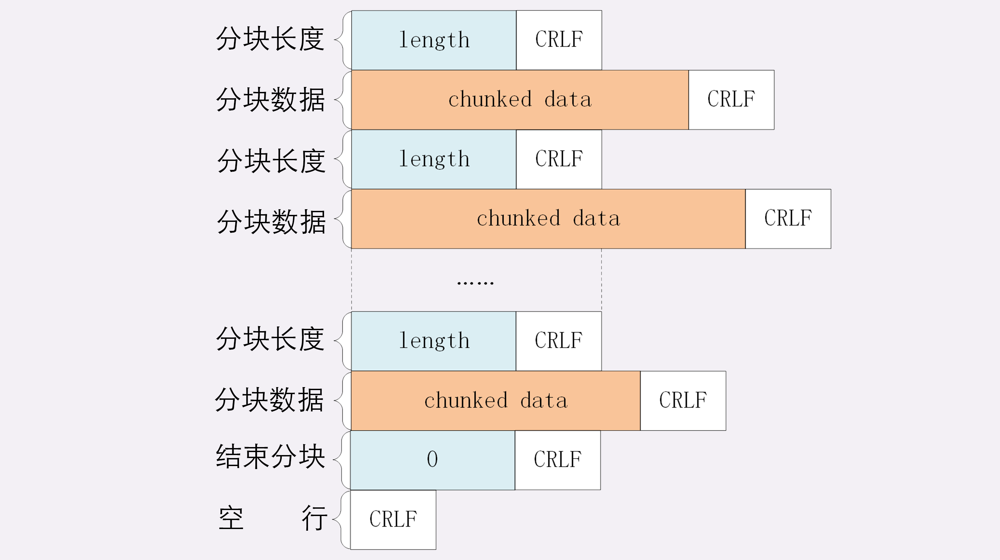
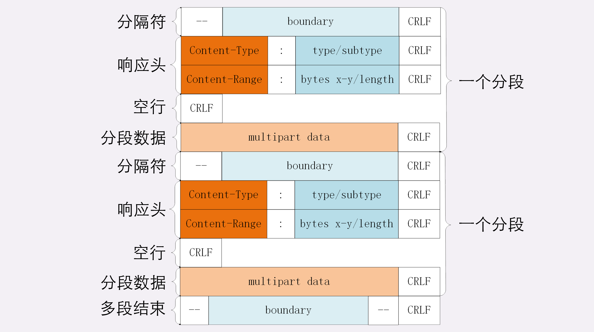
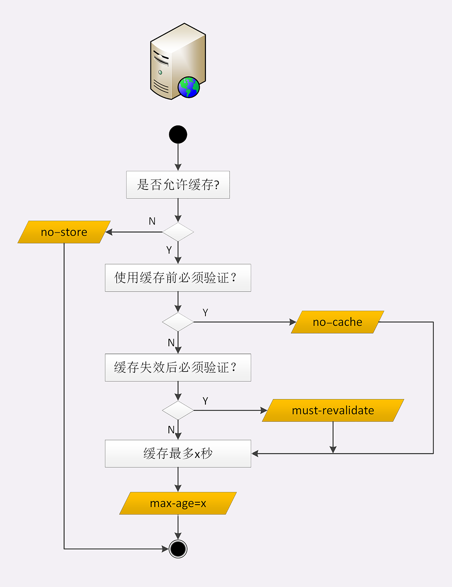

身为一个前端，HTTP 对我而言就像是云雾环绕的一座山，看不透也不知从哪开始攀登。深入学习 HTTP 协议系列就是我对罗剑锋老师的《透视 HTTP 协议》所做的总结。希望能对大家的登山之旅有所帮助。
HTTP 实体数据
实体数据类型
HTTP 实体数据的类型采用的 MIME type，是多用途互联网邮件扩展方案（简称MIME）的其中一部分标准。
HTTP实体数据 常用类别：
- text：文本格式的可读数据，例如：text/html、text/plain、text/css等。
- image：图像文件，例如：image/gif、image/jpeg、image/png等。
- audio：音频数据，例如：audio/mpeg等。
- video：视频数据，例如：video/mp4等。
- application：数据格式不固定，必须有上层应用程序来解释。常见的有 application/json，application/javascript等。
实体数据压缩
HTTP 在传输时为了节约宽带，有时会根据指定压缩类型进行压缩数据。
Encoding type（压缩数据类型）常用类别：
- gzip：GNU zip 压缩格式。
- deflate：zlib 压缩格式。
- br：专门为 HTTP 优化的新压缩算法。
数据类型头字段
HTTP 协议定义了Accept 请求头字段和 Content 实体头字段。
Accept 字段标记的是客户端可理解的 MIME type，可以用“,”做分隔符列出多个类型：
1 | Accept: text/html,application/xml,image/webp,image/png |
服务器会在响应报文里用头字段 Content-Type 告诉实体数据的真实类型：
1 | Content-Type: text/html |
Accept-Encoding 字段标记的是客户端支持的压缩格式，Content-Encoding 字段标记的是服务器使用的压缩格式，如下：
1 | Accept-Encoding: gzip, deflate, br |
语言类型头字段
实体数据语言类型
Accept-Language 字段标记了客户端可理解的自然语言，用“,”做分隔符列出多个类型，类型的顺序代表接收语言的优先级顺序，例如：
1 | Accept-Language: zh-CN, zh, en |
Content-Language 表示服务器实体数据使用的实际语言类型：
1 | Content-Language: zh-CN |
字符集类型
请求头字段是 Accept-Charset，相应头字段是 Content-Type 的数据类型后面用“charset=xxx”来表示，例如：
1 | Accept-Charset: gbk, utf-8 |
由于现在的浏览器都支持多种字符集，通常不会发送 Accept-Charset，服务器也不会发送 Content-Language。
实体数据客户端服务端对应图

内容协商
HTTP 协议里用 Accept、Accept-Encoding、Accept-Language 进行内容协商的时候，可以用一种特殊的“q”参数表示权重来设定优先级。
权重的最大值是 1，最小值是 0.01，默认值是 1，0 表示拒绝，具体的形式是在数据类型或语言代码后面加一个“;”，然后加上权重“q=value”。
如下字段：
1 | Accept: text/html,application/xml;q=0.9,*/*;q=0.8 |
表示浏览器最希望接收 html 文件，权重是1。其次是 xml 文件，权重0.9，最后是任意文件权重是 0.8。服务器接收到请求后会计算权重，根据自己的实际情况返回。
内容协商结果
服务器会在响应头添加 Vary 字段，记录服务器在内容协商时参考的请求头字段。例如：
1 | Vary: Accept-Encoding,User-Agent,Accept |
HTTP 传输大文件的方法
数据压缩
上面讲到的可以利用请求头对实体数据的压缩，缺陷是大部分压缩算法只针对于文本文件，对图片、音频、视频等数据基本无效。
分块传输
可以在响应报文里用头字段“Transfer-Encoding: chunked”来表示将 body 数据分块传输。
“Transfer-Encoding: chunked”和“Content-Length”这两个字段是互斥的，相应报文的传输长度只能是已知或者未知（chunked）。
分块传输编码规则
- 每个分块包含两个部分，长度头和数据块；
- 长度头是以 CRLF（回车换行，即\r\n）结尾的一行明文，用 16 进制数字表示长度；
- 数据块紧跟在长度头后，最后也用 CRLF 结尾，但数据不包含 CRLF；
- 然后用一个长度为 0 的块表示分块结束，即“0\r\n”;
- 最后添加换行，结合4.结尾即使 “0\r\n\r\n” 形式。

范围请求
客户端可以在请求头里使用专用字段来表示只获取文件的一部分。
想要接受到分块数据，服务器必须在响应头里使用字段“Accept-Ranges: bytes”告知客户端支持范围请求。
请求头 Range 是 HTTP 范围请求的专用字段，格式是 bytes=x-y，x、y表示的是“偏移量”，单位的单位是字节，“0-10”表示的是前10个字节。并且x、y可以省略。
服务器接收到 Range 字段后需要做以下处理：
- 检查范围是否合法，不合法返回 416。
- 范围正确的话返回 206，表示 body 只是元数据的一部分。
- 在响应头添加 Content-Range，用来表示片段的实际偏移量和资源的总大小，格式是bytes x-y/length，例如，对于“0-10”的范围请求，值就是“bytes 0-10/100”。
- 将片段用 TCP 发送给客户端。
分块传输获取多段数据
当 Content-Type 为 multipart/byteranges，时，表示 body 是有多段字节序列组成的，并且需要添加参数“boundary=xxx”，xxx 用来表示段子健的分隔标记。

HTTP 连接管理
短链接和长连接
HTTP 协议最初是短链接的形式，每次发送请求前需要与服务器建立连接（3次握手），收到响应报文后会立即关闭连接（4次挥手）。
因为短连接每次建立和关闭，耗费了大量时间，所以出现了长连接通信方式
连接相关的头字段
在 HTTP/1.1 中的连接默认启用长连接，只要向服务器发送了一次请求，后续的请求都会利用第一次打开的 TCP 连接收发数据。
长连接在请求头中的字段是 Connection，值为 keep-alive。
客户端若想关闭长连接可以在请求头上加上 Connection:close。
服务端通常不会主动关闭连接，但可以使用一些策略，如 Nginx 一般有以下两种方式：
- 使用 “keepalive_timeout”，设置长连接超时时间；
- 使用 “keepalive_requests”，设置长连接上最大请求次数。
队头阻塞
队头阻塞是因为 HTTP 请求-应答模型造成的，HTTP 规定报文必须是“一发一收”，所以众多的请求就会形成一个先进先出的串行队列，如果队首的请求处理过慢，就会导致整个队列阻塞。
性能优化
- 并发连接：将客户端并发数由 2 个提高到 6~8 个。
- 域名分片：添加多个域名，指向同一服务器。
HTTP 重定向
重定向过程
一次“重定向”过程实际上发送了两次 HTTP 请求，第一个请求返回了 302，然后第二个请求就被重定向到了对应页面。
在第一次请求中会有 Location 字段，只有配合 301/302 状态码才有意义，它标记了服务器要求重定向的 URI。
Location 中的 URI 有两种方式，绝对 URI、相对 URL。绝对 URI 是指完整的 URI，相对 URI 省略了 scheme 和 host:port，只有 path 和 query 部分，scheme 和 host:port 则根据请求发起的 URI 获取对应的值。
重定向状态码
301：永久重定向，原 URI 永久不存在了；
302：临时重定向，不会对新 URI 进行记录；
303：要求重定向后的请求改为 GET 方法；
307：类似302，要求重定向后请求里的方法和实体不允许变动；
308：类似 307 + 301，不允许重定向后的请求变动；
303、307、308 在浏览器和服务器的接受程度较低。
重定向相关问题
- 性能损耗：重定向需要两次 HTTP 请求，对性能有一定消耗；
- 循环跳转：如果重定向设定不合理，会出现循环跳转的现象。
HTTP 的 Cookie 机制
Cookie 是什么
因为 HTTP 请求是无状态的，所以 Cookie 相当于在客户端添加一个标识，每次发送到服务器带上这个标识，用来像服务器表示身份。
Cookie 的工作过程
- 在首次 HTTP 请求时，服务器会添加请求头字段 Set-Cookie，内容 key=value，发送给客户端；
- 浏览器收到相应，将 Set-Cookie 里的值保存在 Cookies 中；
- 浏览器发起请求时，会在请求中添加 Cookie 字段，内容就是 保存在 Cookies 中值；
- 服务器根据请求中的 Cookie 识别出客户端，为其提供相应服务。
服务器可以传递多个 Set-Cookie，浏览器在发送多个 Cookie 时，用“;”隔开每一个 key=value。
Cookie 的属性
Cookie 的生命周期
Expires：Cookie 截止时间，这里绝对时间。
Max-Age：Cookie 失效的相对时间，单位是 s。
Cookie 的作用域
Domain 和 Path 指定了 Cookie 所属的域名和路径。
Cookie 的安全性
HttpOnly：该 Cookie 只能通过 HTTP 协议传输。
SameSite：防止“跨站请求伪造”（XSRF）攻击。“SameSite=Strict”可以严格限定 Cookie 不能随着跳转链接跨站发送，“SameSite=Lax”允许 GET/HEAD 等安全方法，禁止 POST 跨站发送。
Secure：Cookie 仅能用 HTTPS 协议加密传输
Cookie 的应用
- 身份验证
- 广告跟踪
HTTP 缓存控制
服务器缓存控制
服务器通过请求头字段 Cache-Control，它有以下属性指示浏览器应该如何使用缓存：
- no-store：不允许缓存，用于变化非常频繁的数据。
- no-cache：可以缓存，使用缓存前不许要去服务器验证是否过期。
- max-age：标记资源的生存时间，时间计算的起点是响应报文的创建时刻。例如，max-age=5。
- must-revalidate：缓存为过期可继续使用，过期则必须去服务器验证是否可使用。
以下为服务器缓存控制策略流程图：

客户端缓存控制
浏览器也可以在请求头加 Cache-Control，用来进行缓存控制。
条件请求
HTTP 规定了请求字段，专门用来检查验证资源是否过期，把需要两个请求完成的工作合并在一个请求里做。
条件请求一共有 5 个头字段，我们最常用的是“if-Modified-Since”和“If-None-Match”这两个。需要第一次的响应报文预先提供“Last-modified”和“ETag”，然后第二次请求时就可以带上缓存里的原值，验证资源是否是最新的。
如果资源没有变，服务器就回应一个“304 Not Modified”，表示缓存依然有效，浏览器就可以更新一下有效期，然后使用缓存。
Last-modified：指资源最后修改时间。
ETag：资源的唯一标识，资源未改动则不会变化。
HTTP 代理服务
代理服务
服务本身不产生内容，而是处于中间位置转发上下游的请求和响应。面对下游用户时，表现为服务器，代表源服务器响应客户端的请求；面对上游用户时，表现为客户端，代表客户端发送请求。
代理有很多种，如：匿名代理、透明代理、正向代理、反向代理。
在实际场景中最常用的代理服务是反向代理。
代理的作用
- 为HTTP增加更多灵活性；
- 负载均衡：进行请求分发，实现负载均衡；
- 健康检查：监控后端服务器，发现有故障及时踢出，保证服务高可用；
- 安全防护：保护被代理的后端服务器；
- 加密卸载：进行加密通信认证；
- 数据过滤：拦截上下行数据；
- 内容缓存：暂存、复用服务器响应。
代理相关头字段
Via：代理服务器用其表明代理身份，代理在转发时会在 Via 内加上自己的代理主机名。例如：发送时服务器接收到 Via: proxy1, proxy2，响应时客户端接收到 Via: proxy2, proxy1。
X-Forwarded-For：与 Via 含义类似，但添加的是请求方 IP 地址。
X-Real-IP：记录客户端 IP 地址，与代理无关。
代理协议
代理协议 v1 版本：在 HTTP 保温前添加一行 ASCLL 码文本。